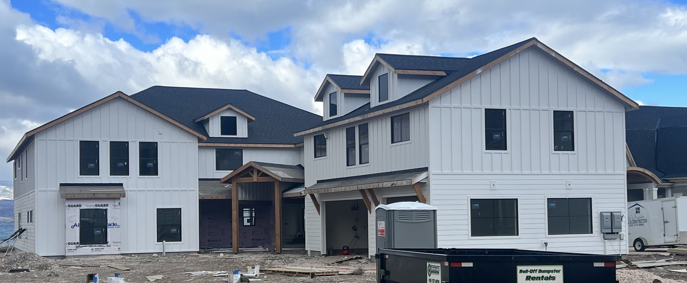
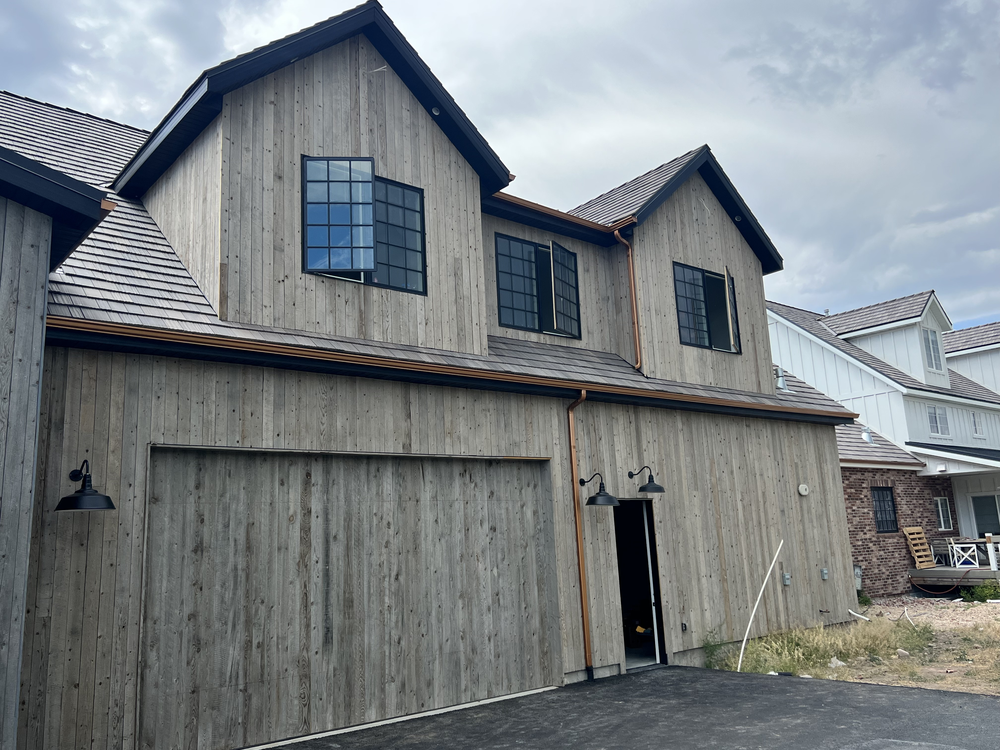
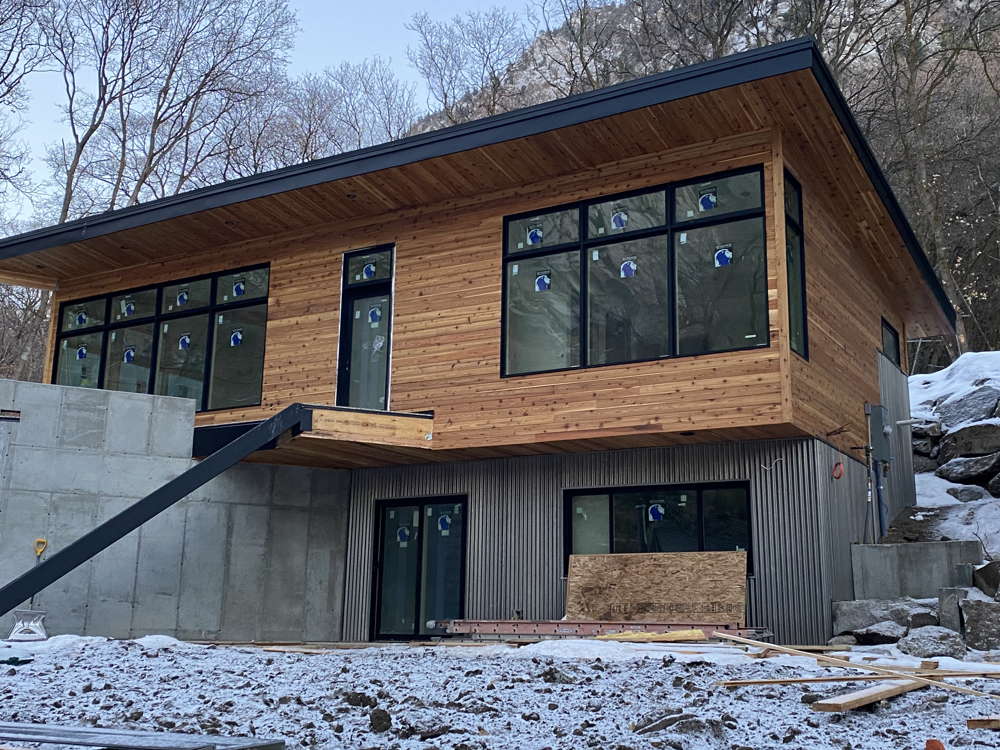
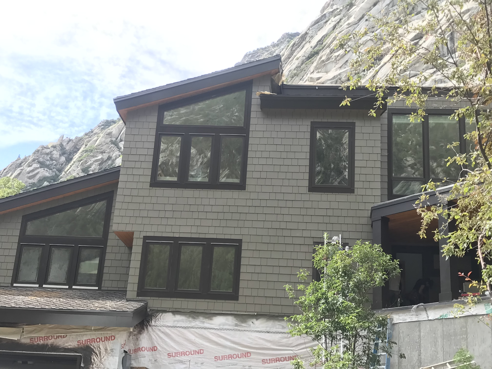
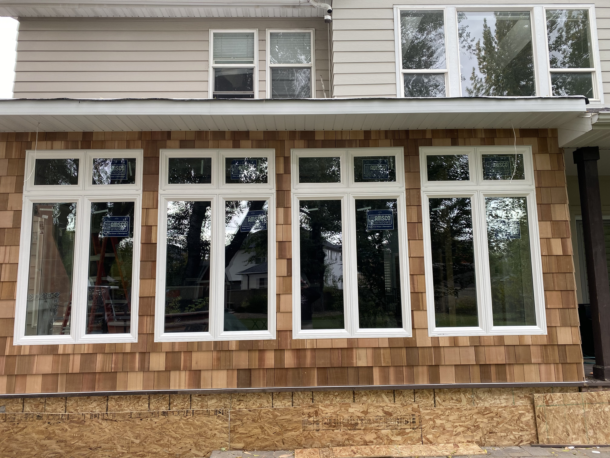
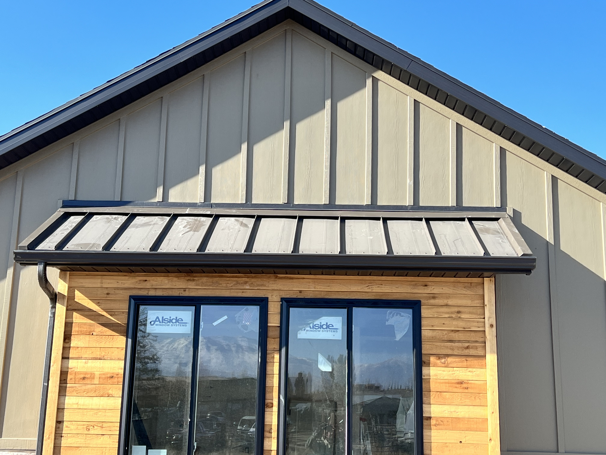

Photo Gallery
Bellow are just a few examples of the work we have done. We specialize in custom work — if you can think of it, we will do it!

A home featuring both siding (shown on the first floor) and board and batten (second floor and gables).

Beautiful vertical barnwood with hints of copper gutter and downspouts.

This cabin in Cottonwood Canyon features siding made of cedar, complimented by custom black facia and cedar soffit to match.

A remodeled home in Salt Lake with a timeless shakes upgrade.

This home received a full makeover with all new cedar shakes, new windows, vinyl siding, and new white soffit and rain gutters.

Board and batten with a custom black roof, black soffit and facia, and unique cedar siding pop out became a trend setter in Nephi, Ut.